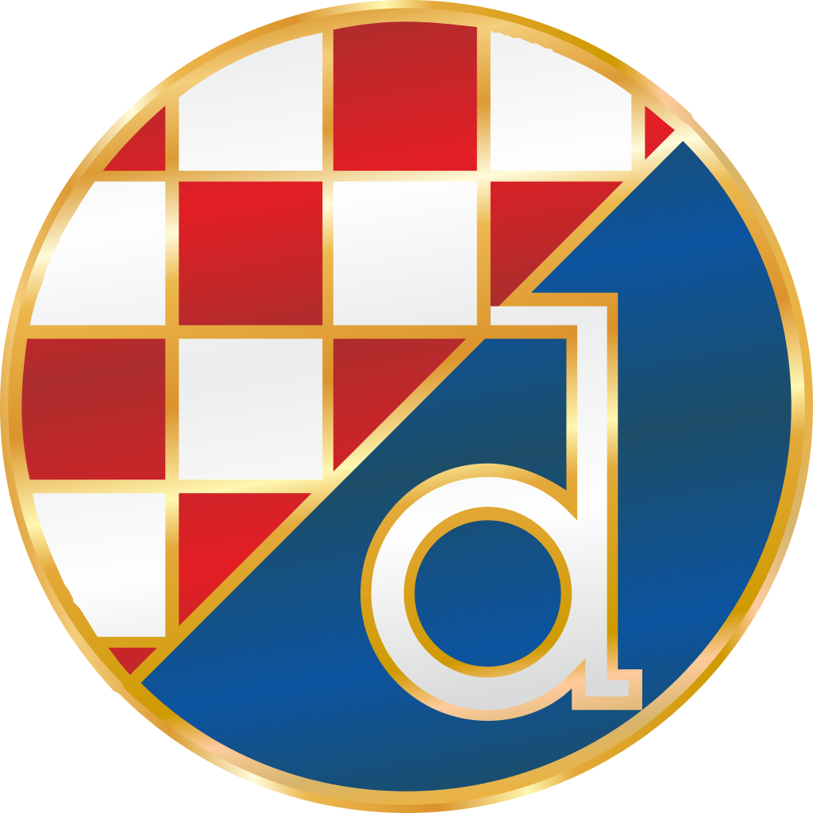
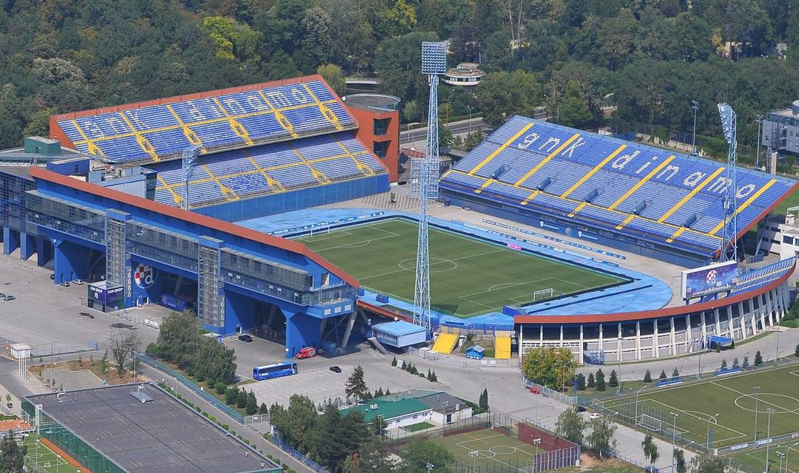
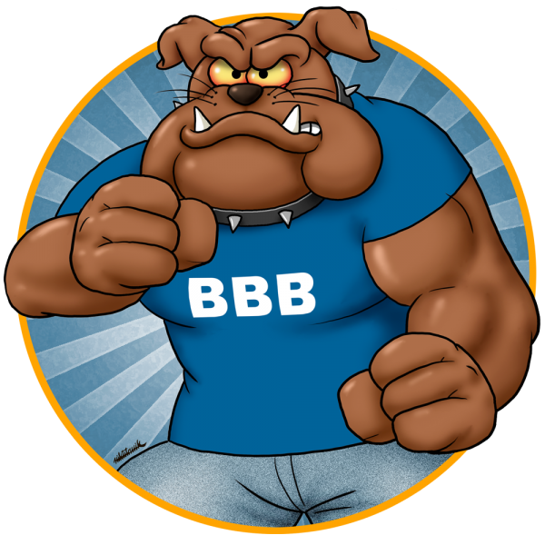

Građanski nogometni klub Dinamo Zagreb je hrvatski nogometni klub iz Zagreba. Utakmice dinama mozete pogledati na Utakmice Od osnutka Republike Hrvatske najtrofejniji je klub u državi. Nadimci kluba su modri, zagrebački plavi, plavi lavovi, purgeri. Maskota kluba je lav Maksi. Domaće utakmice igra na Stadionu Maksimir. Dinamo je poznat po svojim vjernim i fanatičnim navijačima Bad Blue Boysima. Klub je cijenjen u svijetu po svojoj nogometnoj školi koja se zadnjih godina smatra za jednu od najboljih u Europi.
Iako je Dinamo kroz povijest pratila vojska navijača, prva organizirana grupa pojavila se tek 1980-ih godina. Nekolicina najvjernijih i najzagriženijih navijača Plavih, po uzoru na inozemne grupe, osnovala je navijačku grupu Bad Blue Boys. Naziv grupe inspirirao je u to vrijeme vrlo popularan film Bad Boys sa Seanom Pennom u glavnoj ulozi. Od osnutka 17. ožujka 1986. godine, na utakmici s Hajdukom u Splitu, bodre Dinamo u velikom broju, kako na domaćim, tako i na gostujućim utakmicama. Tijekom godina, unatoč brojnim incidentima, postali su zaštitni znak kluba zbog svoje vjernosti i fanatičnog navijanja. Na domaćim utakmicama smješteni su na sjevernoj tribini maksimirskog stadiona.
  | Ime | Prezime | Placa | Klub | Nacionalnost |
|---|---|---|---|---|
| Dominik | Livakovic | 1m | Dinamo | Hrvat |
| Bruno | Petković | 2m | Dinamo | Hrvat |
| Mislav | Oršić | 800k | Dinamo | Hrvat |
| Amer | Gojak | 500k | Dinamo | Bosanac |
| Dani | Olmo | 5m | Leipzig | Španjolac |
Ispunite upit na nasoj stranici u dropdown baru "saznaj više"